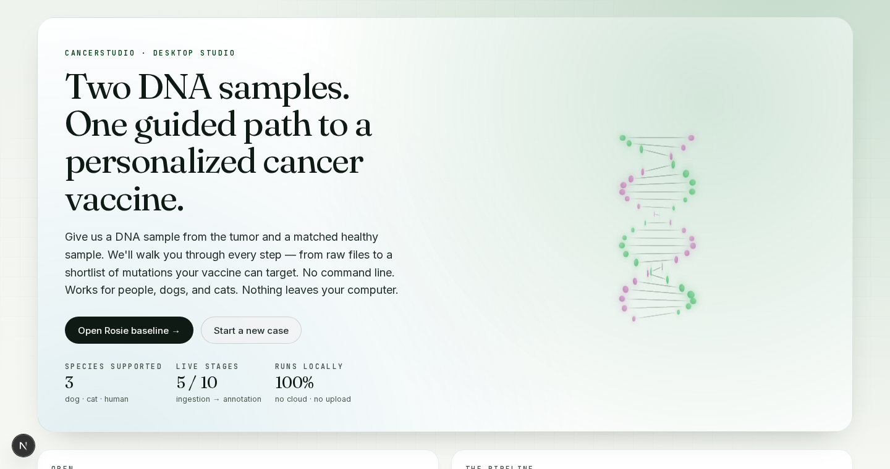
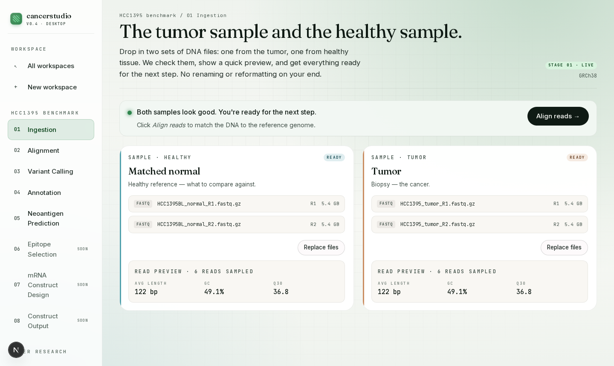
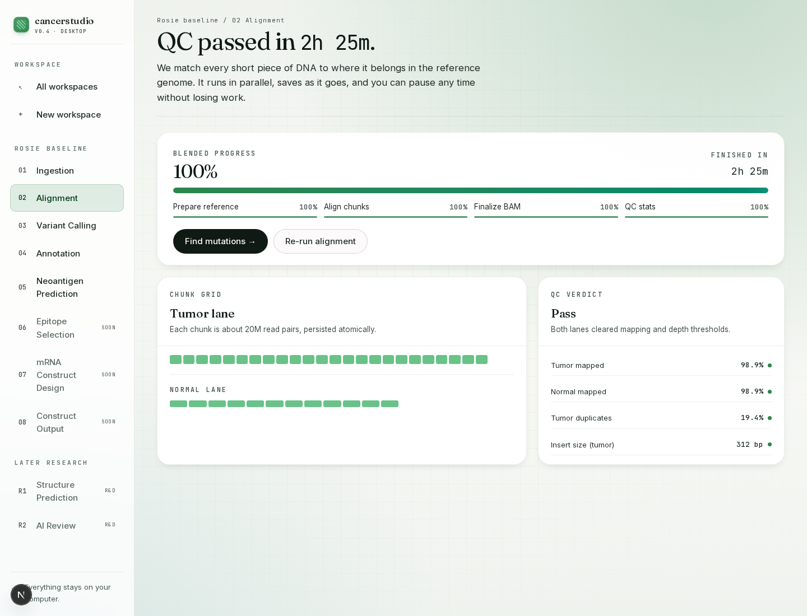
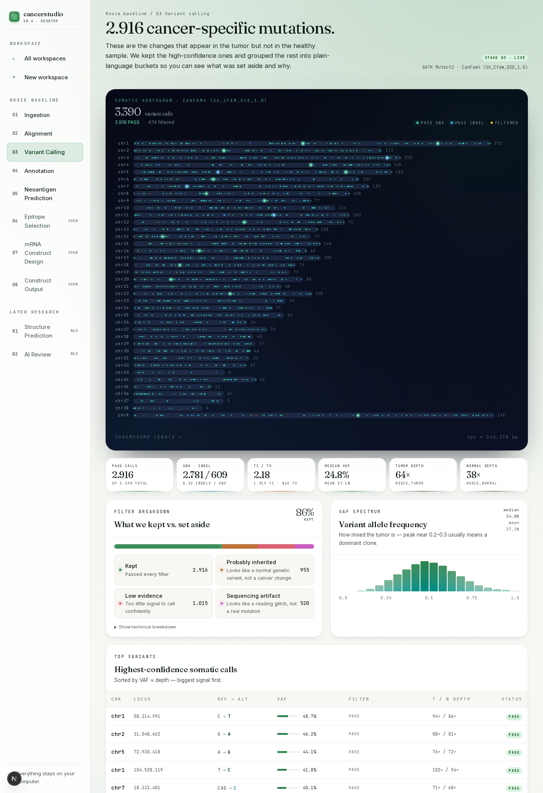
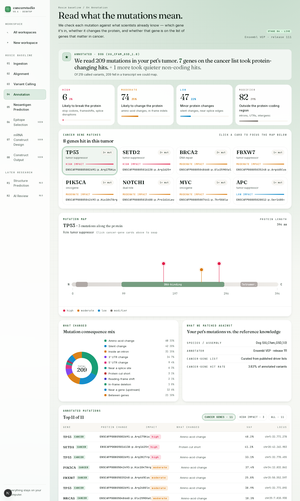
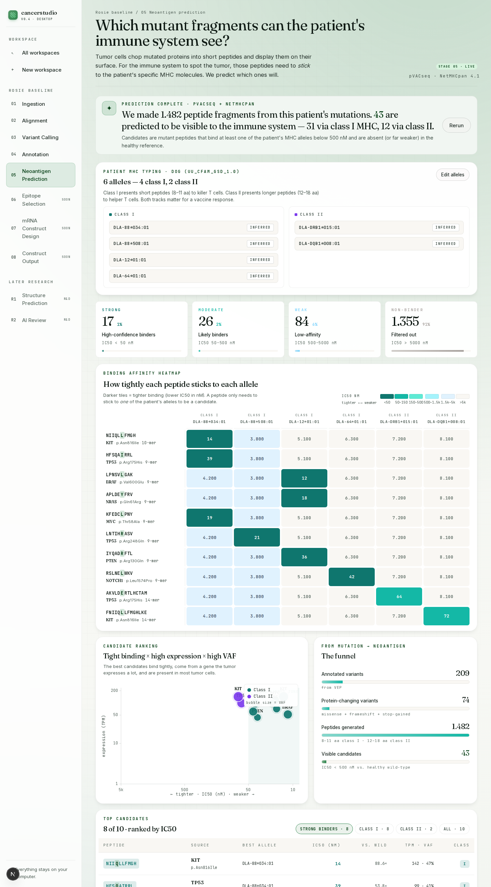
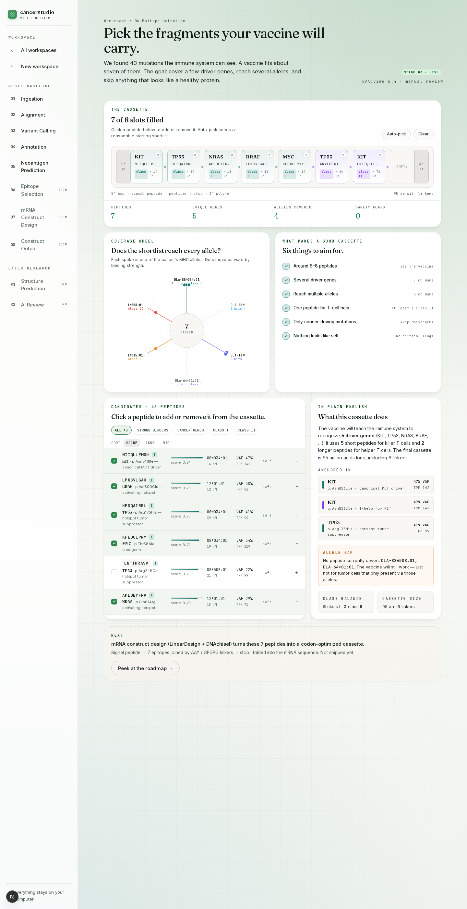

Start
Pick a species. Name your workspace.
Every case is a workspace. Human, dog, or cat — cancerstudio loads the right reference genome and locks the pipeline to that species for the rest of the run.

Ingest
Tumor and healthy reference. Guided from the start.
Two lanes: the tumor biopsy and a matched normal reference. cancerstudio reads the files in place, supports a FASTQ pair or one BAM/CRAM per sample, previews a few reads, and normalizes everything into canonical FASTQ before alignment unlocks.

Align
Plain-language alignment first. Advanced controls when needed.
One button: Start alignment. The main card tells you what is happening in plain language, how long it may take, and what the next step depends on. Chunk grids, command tails, and compute settings live under one advanced section instead of crowding the default workflow.
Multi-hour runs need multi-hour UX: blended progress bar with per-phase sub-bars, rolling ETA, heartbeat and stall detection. Need your machine back? Hit Pause & keep progress and resume later, or Cancel & discard if you want a clean slate.

Find mutations
One click. Then the karyogram does the talking.
After alignment passes QC, hit Find mutations. cancerstudio compares the cancer sample to the healthy sample, sets aside sequencing glitches and inherited variants, and shows you what's left: every cancer-specific mutation across the genome as a glowing karyogram.
Raw Mutect2 filter flags like
panel_of_normals, strand_bias,
weak_evidence are grouped into four plain-language
buckets — Kept, Probably inherited, Low evidence, Sequencing
artifact — with a one-click technical breakdown for experts. The
metrics ribbon, VAF spectrum, and top-variants table give you the
full story without asking you to learn a VCF format along the way.

Read what they mean
Which gene. What changed. Whether it matters.
Stage 4 annotates every somatic call with Ensembl VEP against a species-specific offline cache, then translates the result into plain English. Impact tiers read as Likely to break the protein, Likely to change the protein, Minor protein changes, and Outside the protein-coding region — not HIGH, MODERATE, LOW, MODIFIER.
Genes that have been linked to cancer before show up as their own cards with role (tumor suppressor, oncogene, DNA repair), mutation count, and top protein change. Click a card and the lollipop plot re-focuses on that gene's protein, showing every mutation along the length. Raw SO terms, VEP command log, and plugin flags live in the Technical details drawer — the primary surface stays readable for a pet owner sharing results with a vet.
The annotated VCF is pVACseq-ready out of the box: the Ensembl Frameshift, Wildtype, and Downstream plugins are baked into every run, so stage 5 will read this file directly when it goes live.

Score the neoantigens
pVACseq + NetMHCpan, made readable.
Stage 5 runs pVACseq against the annotated VCF twice — class I against NetMHCpan 4.1, class II against NetMHCIIpan 4.3 — so a paused run can resume with class II alone without rerunning class I. The patient's DLA or HLA alleles are editable right on the panel; non-expert users get the species default.
The output is summarized as five visual surfaces: binding buckets with plain-language thresholds instead of raw IC50 cutoffs, a peptide × allele heatmap on a log scale, a VAF-versus-binding scatter that tells you which peptides are both well-presented and actually clonal, an antigen funnel from annotated variants down to visible candidates, and a top-candidates table. The pVACseq command log and NetMHCpan version stay in the expert drawer.

Curate the cassette
Seven slots. Click to add. Watch the coverage.
Stage 6 is a curation surface on top of stage 5's candidates. Roughly 43 peptides land from the previous step; a realistic mRNA vaccine cassette fits about seven. The cassette is the hero: eight slots across the top, with AAY and GPGPG linker dots between them and 5′ cap / 3′ poly-A blocks at the ends. Clicking a peptide in the deck adds or removes it from a slot. Auto-pick seeds a reasonable starting shortlist; picks persist per workspace.
A radial coverage wheel plots one spoke per patient allele, with dots placed outward by binding strength — allele gaps become obvious at a glance. A six-item goals checklist ticks live as picks change: class balance, driver-gene diversity, allele coverage, no passenger mutations, no self-similarity, and size. The plain-English selection summary at the bottom spells out what the resulting cassette actually teaches the immune system.

The pipeline
Six guided core steps, then the roadmap.
Ingestion, alignment, variant calling, annotation, neoantigen prediction, and epitope selection are live today. The rest of the stages stay visible as disabled roadmap items so the workflow stays honest.
-
1
IngestionLive
Pick local FASTQ, BAM, or CRAM. Normalize into canonical paired FASTQ.
-
2
AlignmentLive
Chunked strobealign against GRCh38, CanFam4, or felCat9. Stop-and-resume at chunk granularity. Verified on COLO829 100× WGS.
-
3
Variant callingLive
GATK Mutect2 + FilterMutectCalls, rendered as a karyogram, plain-language filter buckets, VAF spectrum, and top-variants table.
-
4
AnnotationLive
Ensembl VEP release 111 + pVACseq-ready Frameshift / Wildtype / Downstream plugins. Rendered as cancer-gene cards, a lollipop plot of the top gene, plain-English impact tiles, and a filterable annotated-variants table.
-
5
Neoantigen predictionLive
pVACseq against class I (NetMHCpan 4.1) and class II (NetMHCIIpan 4.3). Rendered as binding buckets, peptide × allele heatmap, VAF/binding scatter, antigen funnel, and a top-candidates table.
-
6
Epitope selectionLive
Curation on top of stage 5: 8-slot cassette, radial allele-coverage wheel, goals checklist, candidate deck, and plain-English selection summary. Picks persist per workspace.
-
7
mRNA construct designPlanned
Codon optimization, UTRs, and secondary structure.
-
8
Construct outputPlanned
Planned export of the final construct package.
Stays on your laptop
Desktop-first, by design.
Electron shell, local Next.js renderer, local FastAPI engine, SQLite on disk. No cloud services, no Docker, no object storage. Your sequencing data never leaves the machine.